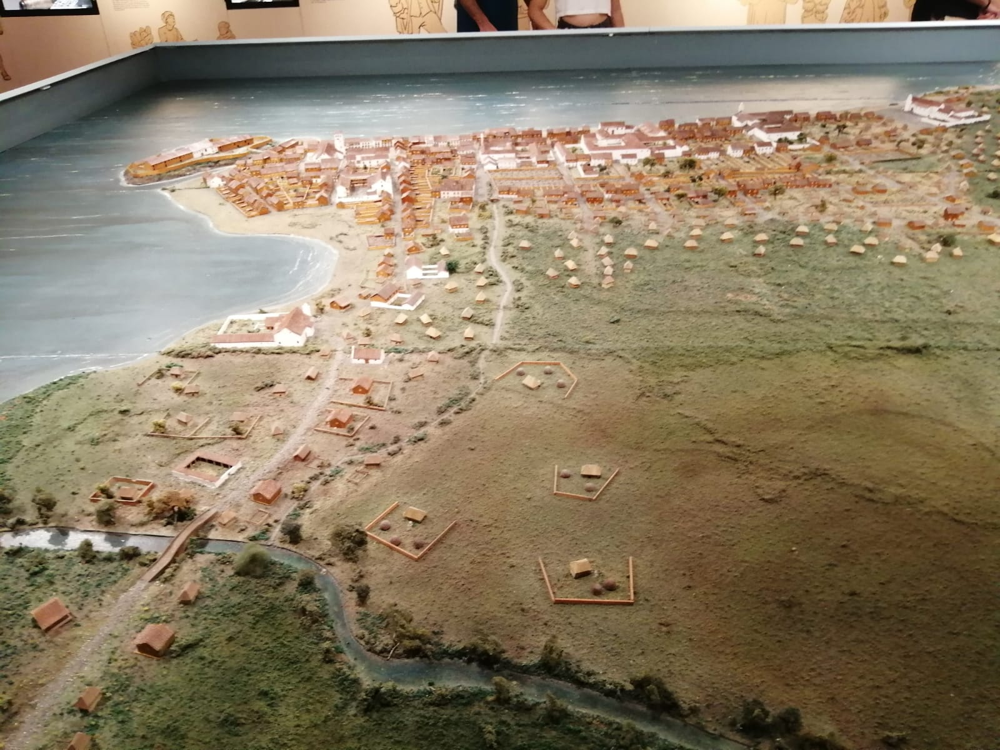
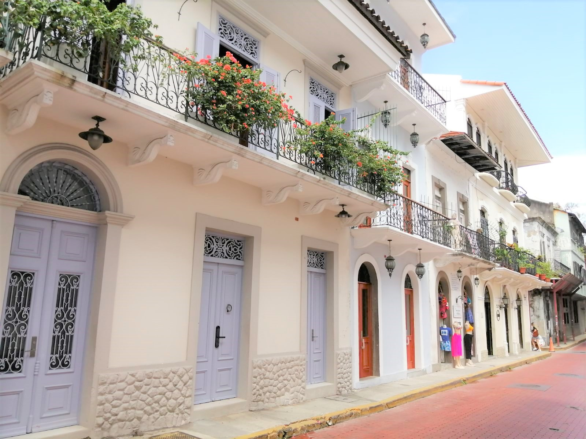

Rutas Panamá
Panamá y su valioso patrimonio
 Iglesia de San José con su altar de Oro, está ubicada en el Casco Viejo/Foto: Alejandro Reyes.
Iglesia de San José con su altar de Oro, está ubicada en el Casco Viejo/Foto: Alejandro Reyes.
Fortificaciones, sitios arqueológicos, monumentos, edificaciones y museos forman parte del variado patrimonio cultural e histórico, que refleja el pasado precolombino, la época de colonización española, la independencia y la formación de la República de Panamá.
La tarea de proteger, mantener y restaurar estos valiosos espacios culturales recae en una serie de actores, que van desde entidades públicas, instituciones privadas, eclesiásticas y patronatos.
De estos complejos resaltan tres de mayor renombre, por ser declarados Patrimonio Mundial de la humanidad: Fortificaciones de la Costa Caribeña de Panamá, Portobelo y San Lorenzo (1980) ; Sitio Arqueológico de Panamá Viejo (1997) y el Distrito Histórico del Casco Antiguo de Ciudad de Panamá (2003).
Además, tiene en la lista de Patrimonio Natural de la Unesco, al Parque Nacional Darién (1981), la Reserva de la Cordillera de Talamanca-La Amistad (1983) y el Parque Nacional Coiba y su zona especial de protección marina (2005).
De las manifestaciones que forman parte del Patrimonio Cultural Inmaterial de la Unesco se mencionan: el sombrero pintao (2017), la cultura congo de Panamá (2018), danzas y expresiones artísticas asociadas al Corpus Christi (2021).
Para la directora nacional de Patrimonio Cultural del Ministerio de Cultura, Lineth Montenegro, Panamá tiene una gran riqueza y son muchos los sitios y las manifestaciones que pueden candidatizarse.
“Los procesos son largos y valen la pena por la forma en que los grupos se unen para apoyar, recoger firmas, participar en los videos, enseñarle a los más pequeños. Sin embargo, no debe olvidarse que las candidaturas tienen que mostrar que promueven la unión y la diversidad cultural, el reconocimiento mutuo sin sentirse superiores a otras expresiones”, según Montenegro.
Los principales desafíos para garantizar la preservación de las edificaciones culturales constituyen varios aspectos, entre ellos: lograr el incremento presupuestario requerido para las entidades que lo solicitan, en relación a la restauración de los monumentos históricos.
Además, que los propietarios (privados, estatales o eclesiásticos), desarrollen proyectos de restauración de los monumentos históricos, cumpliendo los requerimientos que exige la ley en materia Patrimonial Cultural de Panamá.
 Catedral basílica Santa María La Antigua, sede de la primera diócesis de tierra firme americana/Foto: Alejandro Reyes.
Catedral basílica Santa María La Antigua, sede de la primera diócesis de tierra firme americana/Foto: Alejandro Reyes.
Según la funcionaria, “otro desafío está en la formación de más profesionales especialistas en restauración de monumentos, obras de arte, etc.”.
Panamá sigue con la actualización de los planes de manejo de las propiedades que se encuentran inscritas en la lista del Patrimonio Mundial de la Unesco, y están ubicadas en áreas costeras, con nuevas normas de manejo, que incluirán las medidas a tomar frente al cambio climático.
También impulsa la inscripción en la lista de Patrimonio Mundial de un sitio seriado, denominado “Ruta Colonial Transístmica de Panamá”, que contempla los sitios ya reconocidos por la Unesco y se incluyen los caminos coloniales, Camino Real y Camino de Cruces.
El Sitio Arqueológico de Panamá Viejo
Sobre una extensión de 28 hectáreas, de las 60 que tuvo originalmente, se erige la ciudad colonial que fue el primer asentamiento europeo en el litoral Pacífico americano, fundado por Pedrarias Dávila, el 15 de agosto de 1519.
De su diseño urbanístico sobresale el trazado de sus calles, plazas y los restos de las edificaciones públicas y privadas.
Según su patronato , el sitio es considerado un ejemplo del urbanismo colonial temprano, que fue trazado por orden de la Corona a Pedrarias. “El trazado de la ciudad sna retícula orientada de acuerdo con los puntos cardinales y con su foco principal en la plaza mayor, con manzanas urbanas que expresan una cierta uniformidad y que se adaptan a las condiciones del terreno a ocupar”.
Está conformado por 19 monumentos dentro de un espacio que fue considerado la residencia más importante de la élite en tierra firme, sede de representantes de la Corona y de la Iglesia católica.
Atractivos de Panamá Viejo/Alejandro ReyesPanamá Viejo tuvo una evolución de aproximadamente 1,500 años, como aldea de pescadores, agricultores, la fundación de la ciudad, su crecimiento y destrucción en 1671. Por su posición sirvió como un punto clave para el desarrollo de importantes rutas comerciales de la época colonial.
El pirata inglés Henry Morgan , con la venia de Inglaterra, logró reunir a una flota de barcos y corsarios que llegaron al Caribe del istmo panameño, se dirigieron a la pujante ciudad que saquearon, incendiaron y destruyeron.
El terrible evento obligó a sus pobladores a mudar la ciudad a un nuevo punto, por lo que el complejo monumental cayó en el abandono. Pero el destino tenía reservado su rescate en el siglo XX, y gracias a su conservación, en la actualidad proporciona un fiel retrato de su arquitectura, su forma histórica y urbana.
 Réplica en maqueta de la primera ciudad del Pacífico americano/Foto: Alejandro Reyes.Julieta de Arango, directora ejecutiva del Patronato Panamá Viejo, dijo que el estado de situación del sitio es bueno y se ha logrado la conservación preventiva de los monumentos y del museo y sus colecciones para que sea activo.
Desde el año 1995, el Patronato Panamá Viejo, una organización de régimen mixto, compuesta por instituciones públicas y privadas se hace cargo de este sitio.
Distrito Histórico del Casco Antiguo de Ciudad de Panamá
Dos años después de la destrucción de Panamá Viejo, en 1673, la ciudad fue trasladada a una pequeña península contigua al cerro Ancón, cerca de las islas usadas como puerto y en la desembocadura de un río.
El pueblo fue reubicado en lo que hoy se conoce como el Casco Antiguo o Distrito Histórico de Panamá. La muralla que lo rodeaba servía para impedir la aproximación naval de los enemigos.
En la Convención del Patrimonio Mundial de la Unesco se define este recinto amurallado como trazado octogonal, la plaza central, calles de diferente anchura y en extramuros el arrabal de Santa Ana.
La plaza principal ubicada en el centro fue ampliada durante el siglo XIX, además de otras plazas poscoloniales. Este distrito alberga una gran cantidad de edificios señalados como importantes para el patrimonio y que fueron construidos entre los siglos XIX-XX.
Su principal atractivo, las iglesias: Catedral Basílica Santa María La Antigua, iglesia San Felipe Neri, iglesia San Francisco de Asís, iglesia de la Merced (que fue trasladada piedra a piedra en lomo de mula desde la destruida ciudad de Panamá Viejo) y la iglesia de San José (conocida por su altar de oro).
 Los balcones de algunas de las viviendas coloniales del Casco Viejo/Foto: Alejandro Reyes.La Presidencia de la República, o Palacio de las Garzas fue construido a finales del siglo XVII y se reconstruyó en los siglos posteriores, es una de las joyas de la arquitectura de gran valor.
Otros ilustres edificios que son ejemplos de la mezcla de arquitectura española, francesa, colonial americana, neoclásica y art nouveau son la Casa del Municipio, el Teatro Nacional, Palacio Municipal, Museo del Canal (que fue originalmente un hotel), el Ministerio de Gobierno y Justicia, la Cancillería de la República de Panamá y la Casa Góngora.
El Casco Antiguo concentra también las casas que fueron el hogar de la clase alta, muchos de estos edificios se han convertido en locales y comercios, por lo que constituyen una oferta social-cultural de día y de noche, además de generar entradas económicas.
La directora nacional de Patrimonio Cultural, Lineth Montenegro , recordó que el Casco Viejo está respaldado también por la ley que impulsa la restauración de edificaciones. “En su mayoría, propiedades privadas que, con los incentivos fiscales otorgados para la restauración, en más de 20 años, hemos podido lograr que un gran número de sus edificaciones se encuentren restauradas, con labores de mantenimiento y conservación permanentes”.
La plaza de la Independencia frente a la catedral es el punto central que recoge la historia de este sitio, porque fue allí donde los ciudadanos panameños se reunieron un 3 de noviembre de 1903, para proclamar la separación de Colombia y la naciente República de Panamá.
El paseo Esteban Huertas conduce a Las Bóvedas, un conjunto de obras que componen las murallas que rodean a la histórica Plaza de Francia y sus espacios abovedados, que daban forma al sistema de defensa y hoy día permiten apreciar la cosmopolita y moderna ciudad de Panamá, que ha crecido teniendo en ambos extremos a este importante patrimonio.